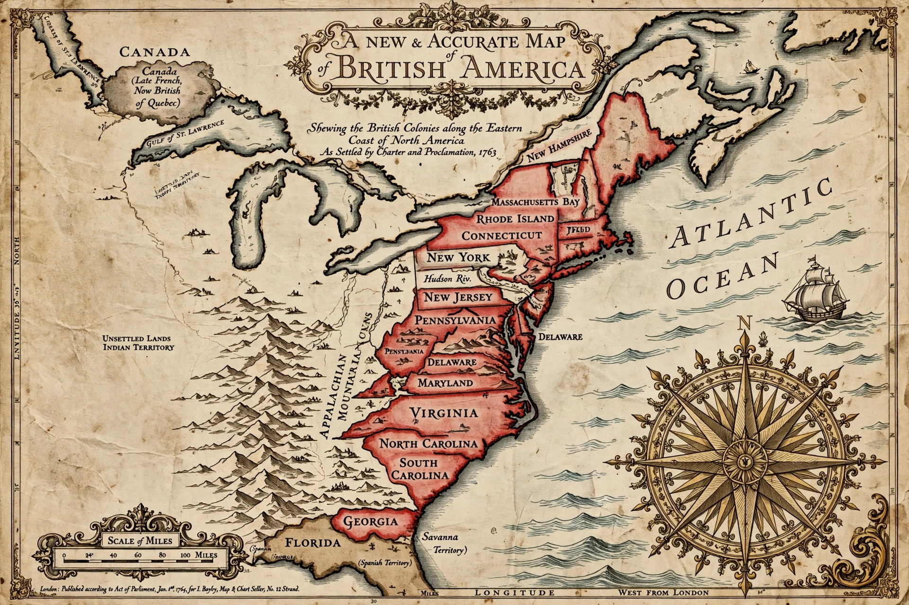

British America comprised the colonial territories of the English Empire, and later British Empire, in continental North America, Central America, the Caribbean, and Guyana from 1607 to 1783.

After early settlements at Jamestown (1607) and Plymouth, colonies spread along Atlantic coast, Canada (acquired 1763), Florida, and Caribbean sugar islands. The Thirteen Colonies rebelled in American Revolutionary War, forming United States; remaining territories became British North America, evolving into Canada.
Ruled via royal, proprietary, and charter colonies. See Thirteen Colonies, British North America, British Empire.